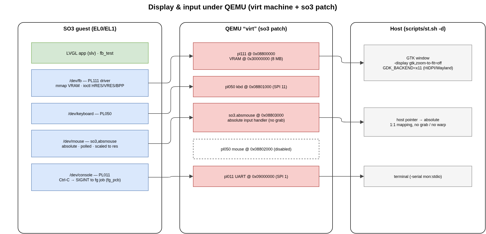

4. Display & Input (QEMU virt)
On the QEMU virt machine SO3 drives a small set of ARM PrimeCell devices for
graphics and human input. These are not part of the upstream virt model;
they are added by the SO3 QEMU patch
(build/meta-qemu/.../files/0001-qemu-8.2.2-r0/0001-virt.c.patch) and described
to the kernel in the device tree (so3/so3/dts/virt64.dts / virt32.dts).
{kind=link}

Fig. 4.2 The display and input path: SO3 /dev nodes ↔ the QEMU virt devices ↔
the host GTK window.
Device |
MMIO base |
IRQ |
|
Role |
|---|---|---|---|---|
PL111 CLCD |
|
— |
|
framebuffer (1024×768, 32 bpp) |
PL050 KMI0 |
|
SPI 11 |
|
PS/2 keyboard |
|
|
— |
|
absolute pointer (polled) |
PL050 KMI1 |
|
SPI 12 |
— |
PS/2 relative mouse (disabled) |
PL011 UART |
|
SPI 1 |
console |
serial console + Ctrl-C |
4.1. Framebuffer (PL111)
The graphical output is an ARM PL111 Color LCD Controller
(devices/fb/pl111.c, compatible = "arm,pl111"). The driver programs a
fixed 1024×768, 32 bpp mode and points the controller at an 8 MB VRAM
region the QEMU patch maps at guest-physical 0x30000000.
User space reaches the framebuffer through /dev/fb:
int fd = open("/dev/fb", 0);
uint32_t hres, vres, size, bpp;
ioctl(fd, IOCTL_FB_HRES, &hres); /* 1 -> 1024 */
ioctl(fd, IOCTL_FB_VRES, &vres); /* 2 -> 768 */
ioctl(fd, IOCTL_FB_SIZE, &size); /* 3 -> bytes */
ioctl(fd, IOCTL_FB_BPP, &bpp); /* 5 -> 32 */
/* IOCTL_FB_IS_REAL == 4: is the framebuffer mmap-able? */
uint32_t *fb = mmap(NULL, size, 0, 0, fd, 0); /* 0x00RRGGBB pixels */
The mapping is non-cacheable: the CPU writes must reach VRAM immediately so
that QEMU’s dirty-page tracking refreshes the window. usr/src/fb_test.c is a
minimal, LVGL-free example that draws colour bars and a moving square straight
into /dev/fb — handy for checking the display path in isolation.
Note
virtfb.c is a fake framebuffer (no mmap, IOCTL_FB_IS_REAL = 0)
used only by special configurations; the real graphical path is the PL111.
4.2. Keyboard (PL050)
The keyboard is an ARM PL050 KMI PS/2 interface (devices/input/kmi0.c +
ps2.c, compatible = "arm,pl050,keyboard"), IRQ-driven on SPI 11 and
exposed as /dev/keyboard. Key codes are read with the GET_KEY ioctl.
Note
QEMU routes PL050 events only to the focused GTK window. The LVGL keypad
indev also needs an lv_group of focusable widgets to do anything useful;
the pointer (below) needs no group.
4.3. The absolute pointer (so3,absmouse)
The historical mouse is a PL050 PS/2 device, which is relative: it reports deltas, not positions. Under QEMU that forces pointer-grab / warp mode, which is fragile — it breaks under Wayland (the compositor forbids pointer warping) and the guest cursor drifts away from the host cursor, differently per monitor and per HiDPI scale factor. No host-side tweak fully fixes a relative pointer.
SO3 therefore uses an absolute pointer, so3,absmouse. It is a tiny
read-only MMIO device added by the QEMU patch at 0x08803000:
Offset |
Register |
Meaning |
|---|---|---|
|
|
absolute X, |
|
|
absolute Y, |
|
|
buttons — bit 0 left, bit 1 right, bit 2 middle |
|
|
|
On the QEMU side the device registers an absolute input handler
(INPUT_EVENT_MASK_ABS | INPUT_EVENT_MASK_BTN) and activates it. Registering
an absolute handler switches QEMU into absolute-pointer mode: there is no grab and
no warp, and the host pointer maps 1:1 onto the guest. Activation moves the handler
to the head of the list so that button events reach it rather than the still-present
(but unused) relative PL050 mouse — qemu_input_find_handler() returns the first
handler whose mask matches the event.
On the guest side devices/input/absmouse.c registers DEV_CLASS_MOUSE
(i.e. /dev/mouse). It carries no IRQ: the LVGL/slv read callback polls
it once per refresh through the GET_STATE ioctl, and the driver scales the raw
0 … MAX coordinates to the display resolution (set via SET_SIZE). The
relative PL050 mouse (kmi1.c) is kept in the tree but its dts node is
status = "disabled" so there is a single /dev/mouse.
4.4. The host GTK window (st.sh -d)
By default st.sh is headless (-display none): no window, serial console
only, used for non-graphical work and CI. Pass -d to open the QEMU GTK
window that presents the guest PL111 CLCD (-display gtk,zoom-to-fit=off):
GTK, not SDL — the SDL backend does not present the PL111 console surface (the window stays black even though the framebuffer is rendered correctly); GTK shows it, and its View menu lists every console.
XWayland for HiDPI — with
-d,st.shexportsGDK_BACKEND=x11(plusGDK_SCALE=1). On a fractionally-scaled HiDPI Wayland panel, GTK reports pointer coordinates in a different scale than the framebuffer surface, so the absolute mapping comes out offset (host and guest cursors shifted) — fine on a 1× external monitor, wrong on the laptop panel. Routing GTK through XWayland gives a uniform pointer-to-surface mapping, so the cursors coincide on every monitor. It is harmless on a native X11 session.
4.5. Console Ctrl-C (SIGINT)
The serial console is the PL011 UART (devices/serial/pl011.c). Its interrupt
handler turns a typed Ctrl-C (0x03) into one of two actions, depending on
whether a thread is currently reading the console (tested via the read_lock
mutex):
A shell is at its prompt (a console read is in progress). The handler sets
serial_intr;pl011_get_byte()returns ETX and the line editor cancels the current line and reprints the prompt — the shell is not killed.A foreground application is running (no console read in progress). The handler delivers
SIGINTto the foreground job. The target is the globalfg_pcb, maintained bysys_do_wait4()inkernel/process.c: when the shell blocks waiting on a child it setsfg_pcb = child, and restores it to itself when the child exits. (Usingfg_pcbrather thancurrent()matters because, in IRQ context,current()is usually the idle thread — the foreground app is asleep.)
Terminating a multi-threaded application correctly (an LVGL app runs an
slv tick pthread alongside its main loop) takes coordinated teardown:
ipc/signal.c(sig_check) defers a fatal default-action signal (SIGINT/SIGTERM/SIGKILL) to the process main thread. Otherwise a spawned thread — which wakes far more often — would callexit_group()and zombie only itself, leaving the main thread alive.kernel/thread.c(discard_tcb_in_pcb) cooperatively cancels the spawned threads: each is flaggedkilledand woken, and self-terminates at its next blocking point; the last one signalsthreads_activeso the main thread’s wait completes.kernel/schedule.c(next_thread, the round-robin policy) still schedules a thread whose pcb is alreadyZOMBIEif it iskilledor it is the pcb’smain_thread— these run kernel-only teardown code and never return to user space, so they must get the CPU to finish exiting.
See Kernel Internals for the broader process/thread model.